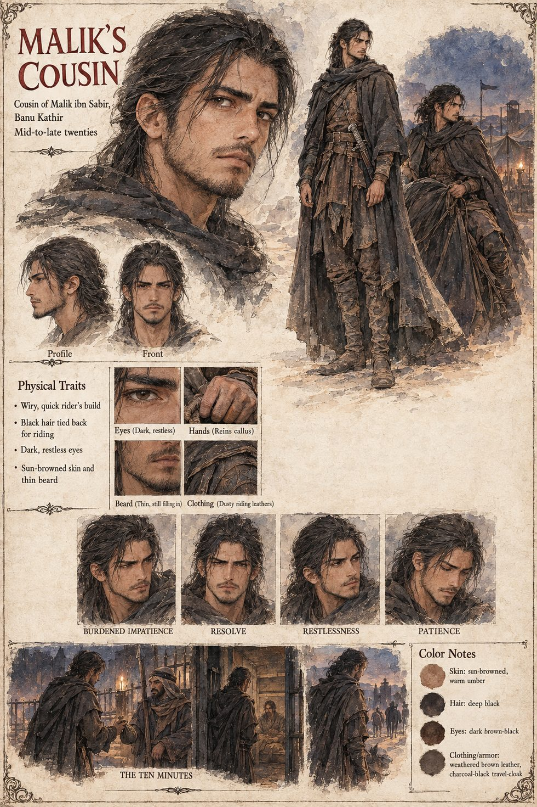

Malik's Cousin
Cousin of Malik ibn Sabir, Banu Kathir · unnamed · offers a night raid in the second year of captivity · mid-to-late twenties by the sheet
A cousin of Malik, of the Banu Kathir, who in the second year of Malik's captivity bribes a guard for ten minutes alone with him. The cousin comes only to ask whether Malik wants them to try a night raid to free him outright, a plan with perhaps one chance in three of working and considerably worse odds of not costing four more lives in the attempt. Malik says no, the only word he is recorded as having said in two years of captivity that anyone thought worth remembering, and then says nothing else for the remaining ten minutes, which his cousin takes, correctly, as the whole of the answer.
It is the only attempt to reach Malik himself that the manuscript records, set against the war fought in his name; the kinsmen who kept his grazing grounds alive in his absence, it says, never once managed to confirm to their own satisfaction whether he deserved it. The manuscript gives the cousin no name, age or gender and never says what came of the visit beyond Malik's answer.
The sheet draws a wiry, quick rider's build in the mid-to-late twenties, with black hair tied back for riding, dark restless eyes, sun-browned skin, a thin beard still filling in and a callus on the reins hand, in dusty weathered brown riding leathers and a charcoal-black travel cloak. Its expression panels run burdened impatience, resolve, restlessness and patience, and a three-part strip titled The Ten Minutes shows the cousin meeting a spear-bearing guard at a lantern-lit stockade, stepping into the cell, and riding away at dusk. Everything visual, the age band and the sheet's title are the sheet's; the manuscript says only that a cousin bribed a guard.